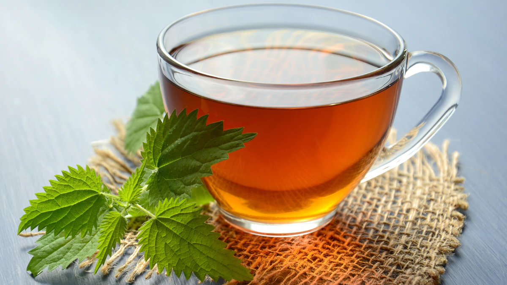

Magic Tea

Ingredients
Separating the ingredients
- 800 ml of water
- 2 pieces of cinnamon
- 1/2 Onion in slices
- 4~5 Cloves of Garlic
- 1 lemon
- 1 Spoon of Honey
- 5 cloves from India
- 2 Bags of Tea (any flavor)
- 5 spoons of sugar
Preparation of ingredients
- cut the lemon into 4 parts
- crush or cut the garlic cloves into small pieces
Instructions
- Put all the ingredients in a pan
- Mix with the help of a spoon
- Cover the pan and wait for the water to boil
- Keep it boiling for 3 minutes
- Turn off the heat and wait 10 minutes for the properties to increase to the tea.
- With the help of a sieve, separate the ingredients from the liquid
- Enjoy your magic tea!